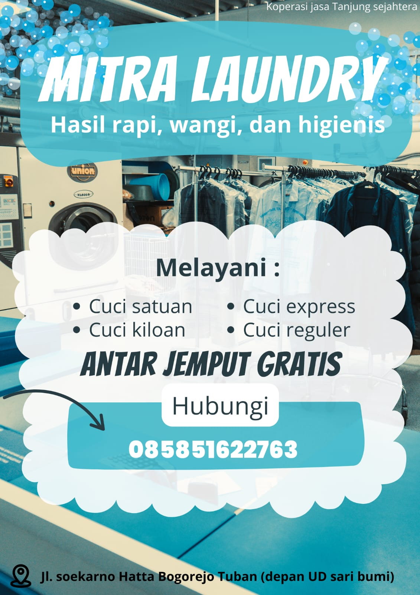

Desain Poster Digital
Proyek pembuatan desain poster digital menggunakan Canva dengan memperhatikan komposisi dan tampilan visual sebagai media penyampaian informasi.

Deskripsi Proyek
Proyek ini merupakan kegiatan pembuatan desain poster digital dengan memanfaatkan aplikasi Canva. Dalam proses desain, saya memperhatikan pemilihan warna, jenis huruf, tata letak, serta elemen visual agar informasi dapat disampaikan dengan menarik dan mudah dipahami.
Tujuan Proyek
Tujuan pembuatan proyek ini adalah mengembangkan kreativitas dan kemampuan desain grafis serta melatih keterampilan dalam menyampaikan informasi melalui media visual.
Proses Pengerjaan
Proses pengerjaan dimulai dengan menentukan konsep desain, memilih template atau menyusun tata letak, menambahkan teks dan elemen visual, kemudian menyesuaikan warna serta komposisi hingga menghasilkan desain poster yang sesuai dengan tujuan.
Tools dan Keterampilan
Hasil dan Pembelajaran
Hasil dari proyek ini adalah sebuah desain poster digital yang dapat digunakan sebagai media penyampaian informasi. Melalui proyek ini, saya belajar mengembangkan ide desain, memilih kombinasi warna, mengatur tata letak, serta memanfaatkan Canva untuk menghasilkan desain visual yang menarik.